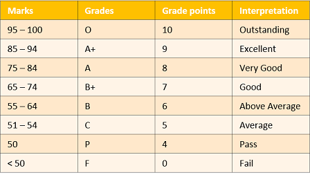

Grading and Evaluation Systems
For the Coursework, the system of Continuous Evaluation is followed in TIFR— thus students are expected
to
keep up with teaching at all stages and there is no study leave before examinations.
Continuous Evaluation of every Compulsory course is generally based on (a) a Mid-semester examination,
(b)
an End-semester examination, (c) classroom and/or take-home assignments, and (d) any other criterion set
up
by
the Instructor of the course.
For all courses, irrespective of Credits, every student is assigned a mark out of 100. The qualitative
estimation corresponding to the marks is give below:

A student who fails a Core (Compulsory) course has to repeat it when it is next offered; he/she passes the
course, the new marks replace the old (failed) marks. The final transcript will show grades only for those
courses which were credited and passed by the student. However, the student needs to clear all the Core
(Compulsory) courses along with the prescribed Elective and Topical courses to complete the course
requirement.
A student who fails an Elective course may repeat it or replace it by a different Elective, in consultation
with the Department SBP representative and/or the Course Coordinator.
If, for some valid reason e.g. health issues, a student is unable to complete a course, an ‘incomplete’ (I)
grade will be awarded. Such a course will not be included in the CPI calculation (see below) and will not be
treated as a ‘failed’ course. However, the clearance process will be the same as for a ‘failed’ course.
A student may acquire a maximum of 3 ‘Incomplete’ grades during the entire coursework. Beyond this, all
incomplete courses will be treated as ‘failed’ courses.,
The marks secured by a student in all the completed courses taken up to a certain point in time are used
to
calculate a
Cumulative Point Index (CPI) as follows:
where
Mn is the marks secured in a course with Credits and both sums run over all the
courses
taken
till the date
concerned.
This CPI is the major criterion in determining the performance of a student in the Course Work.
Inadequate performance
If the CPI of a student falls below 55, he/she will be placed on Academic Probation and will remain so until
the
CPI
becomes 55 or more, or the Course Work ends. Likewise if a student fails (marks < 50) in one course, he/she will
be placed on Academic Probation and will remain so until the course is cleared. A student on Academic
Probation may be permitted to take one course less during the semester, in consultation with the Course
Coordinator.
All CPI-related decisions will be taken only at the end of the relevant semester,
taking the
student’s current record into account.
Additional Department-specific criteria for performance may
be found
here.
Cumulative Grade Points
Average
(CGPA) : The final transcript will show the CGPA, which is calculated
as follows: If a student has taken courses numbered as 1,2, 3,… , which have Credits C1, C2, C3, …
respectively and the Grade Points are G1, G2, G3, … in these courses, then the Cumulative Grade Points
Average (CGPA) is
CGPA=(C1 x G1 + C2 x G2 + C3 x G3 … )/(C1+C2+C3+…)
Additional
Department-specific criteria
for performance may be found
here.
The academic programme of a student will be terminated if
→ he/she fails in more than two courses, irrespective of CPI.
→ he/she fails in two courses and has CPI of other courses less than 65.
→ he/she fails in one course while on Academic Probation.
→ he/she fails to Register for Ph.D. by the end of the Second Year (for Ph.D. students) or Third
Year
(for Integrated Ph.D. students).
This dateline will be extended by any time lost due to leave granted by the Subject Board for
medical or
other reasons.
It may also be extended if the student has to clear courses with ‘I’ grades.
→ termination is recommended by his/her Department with sufficient reason(s) and approved by the
SBP.
→ termination on disciplinary grounds is recommended by a competent authority.